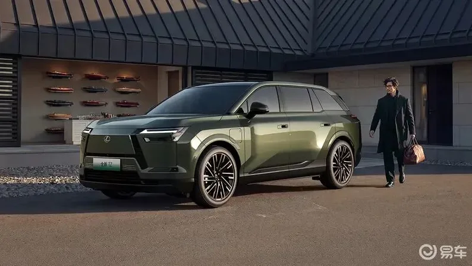

Lexus · 預告 · 中國2026-11-15
Lexus TZ 純電三排休旅官宣廣州車展亮相：一體化紡錘形車身，座艙主打「移動會客廳」
全新纯电三排SUV，雷克萨斯TZ将于广州车展亮相！
Lexus 中國官宣全新純電三排座休旅 TZ 將於 11 月 27 日廣州車展亮相，車長 5,100 mm、軸距 3,050 mm，以專屬純電平台打造。預計推出 TZ450e 單馬達與 TZ550e 雙馬達四驅等版本，價格與續航尚未公布。
設計解析 Design Notes
- 車頭延續品牌一體化紡錘形車身，搭配帶建築感的幾何圖形語言。
- 座艙「Driving Lounge」概念以低地板與座椅配置，讓第三排也有足夠頭腿空間。
- 材質內飾大量使用竹韻飾板、再生鋁與生物基材質。
- 氛圍可調光全景天幕貫穿三排，配 21 揚聲器 Mark Levinson 與 6 種日式氛圍燈。